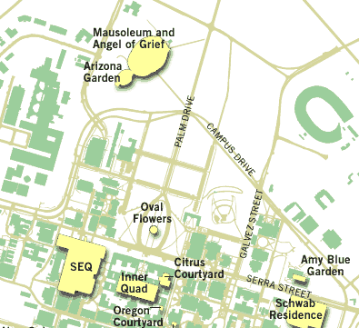

Tour of Stanford's Arizona Garden
The Stanford Arizona Garden is on the south side of the mausoleum off Quarry Road between Campus Drive and Arboretum Road. It has also been called the Cactus Garden. Designed for Jane and Leland Stanford by landscape architect Rudolf Ulrich between 1881 and 1883, it had been neglected from the 1920's until recently. For several years, the Stanford grounds keeping staff and local cacti enthusiasts (many of them members of our club) have been restoring the garden to its former glory.
There is parking near the garden that is free on the weekends. Members should arrive at the garden by 12:30 pm. Herb Fong, Stanford's Chief Groundskeeper, will lead a tour of the garden starting at 1:00 pm.

|